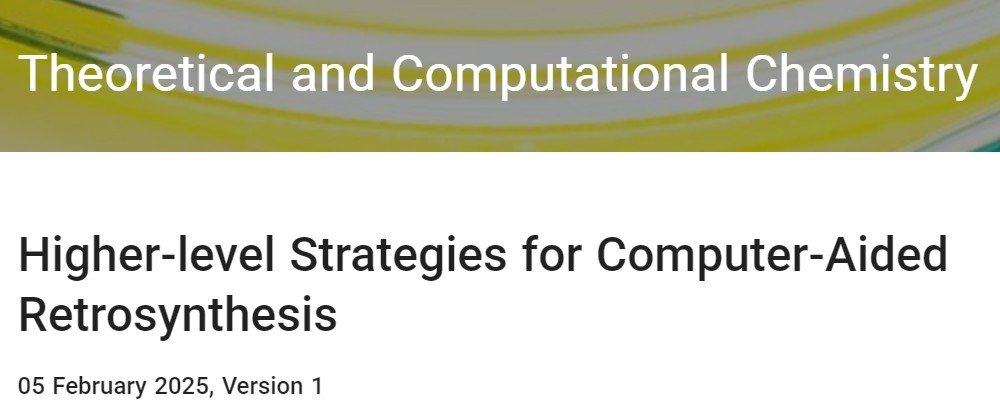
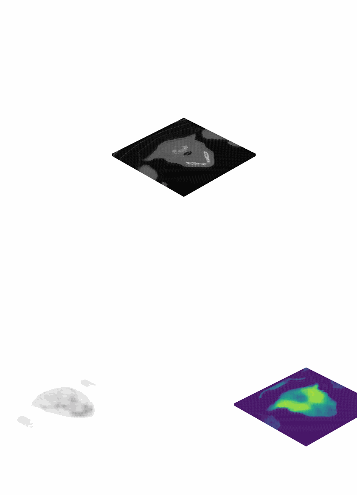
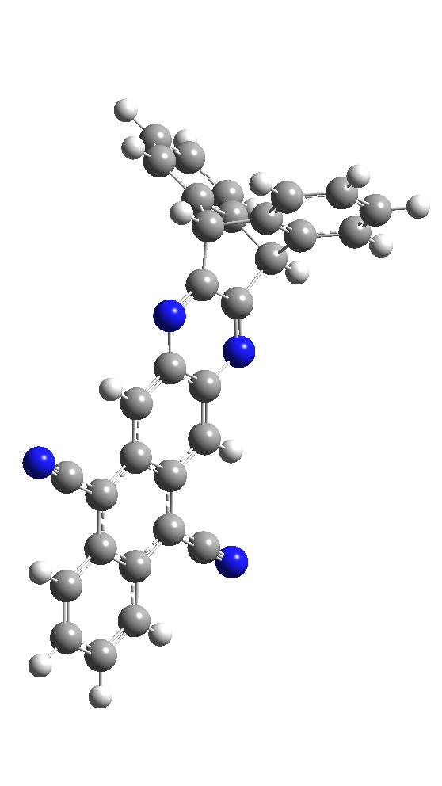
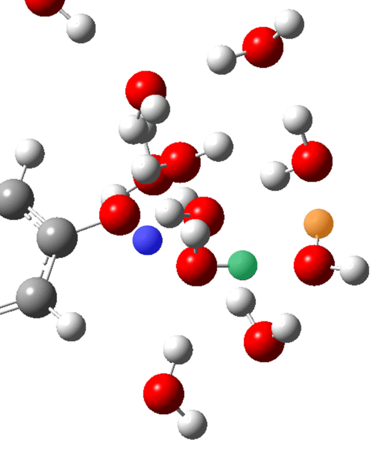
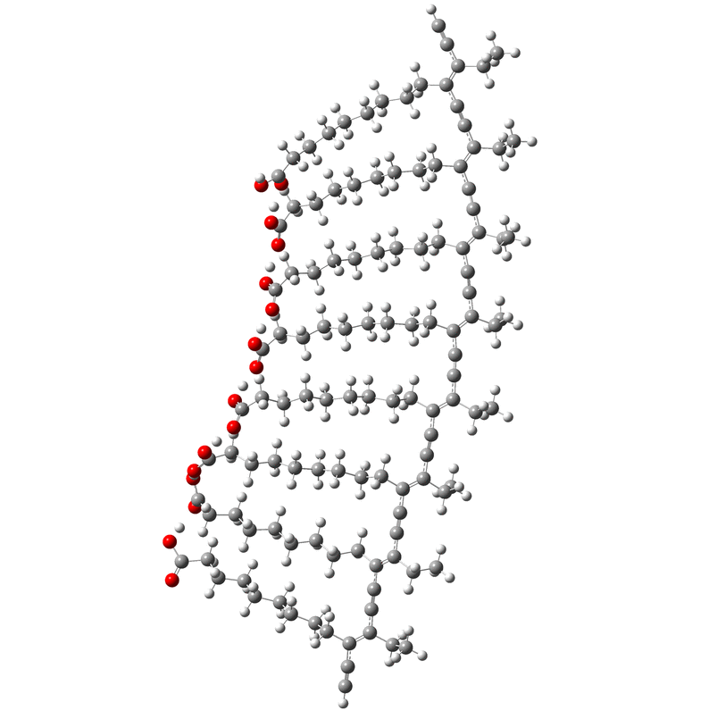

2025
38
Electron flow matching for generative reaction mechanism prediction obeying conservation laws
arXiv preprint

37
Higher-level Strategies for Computer-Aided Retrosynthesis
ChemRxiv preprint

More Info
36
ASKCOS: an open source software suite for synthesis planning
Acc. Chem. Res., 58 (11), 1764–1775 (2025) DOI

35
Generative deep learning-based efficient design of organic molecules with tailored properties
ACS Cent. Sci., 11 (2), 219-227 (2025) DOI

2024
34
Reproducing Reaction Mechanisms with Machine-Learning Models Trained on a Large-Scale Mechanistic Dataset
Angew. Chem. Int. Ed., 63 (43), e202411296 (2024) DOI

2022
33
Universal surface tailoring of perovskite nanocrystals via organic pseudohalide ligands applicable to green and blue light- emitting diodes
J. Mater. Chem. C, 10 (48), 18226-18233 (2022) DOI

32
Reliable experimental method for determination of photoacidity revealed by quantum chemical calculations
Phys. Chem. Chem. Phys., 24 (36), 21714-21721 (2022) DOI

31
Deep learning for development of organic optoelectronic devices: Efficient prescreening of hosts and emitters in deep-blue fluorescent OLED
npj Comput. Mater., 8, 147 (2022) DOI

30
Beyond Woodward–Fieser Rules: Design Principles of Property-Oriented Chromophores Based on Explainable Deep Learning Optical Spectroscopy
J. Chem. Inf. Model., 62 (12), 2933-2942 (2022) DOI

29
Pyridine-NBD: A homocysteine-selective fluorescent probe for glioblastoma (GBM) diagnosis based on a blood test
Anal. Chim. Acta, 1202, 339678 (2022) DOI

28
Locoregional Recurrence Prediction Using a Deep Neural Network of Radiological and Radiotherapy Images
J. Pers. Med., 12 (2), 143 (2022) DOI

More Info
2021
27
Fullerene-Based Triads with Controlled Alkyl Spacer Length as Photoactive Materials for Single-Component Organic Solar Cells
ACS Appl. Mater. Interfaces, 13 (26), 43174-43185 (2021) DOI

26
Rational Molecular Design of Azaacene-based Narrowband Green-emitting Fluorophores: Modulation of Spectral Bandwidth and Vibronic Transitions
ACS Appl. Mater. Interfaces, 13 (22), 26227-26236 (2021) DOI

More Info
25
Deep Learning Optical Spectroscopy Based on Experimental Database: Potential Applications to Molecular Design
JACS Au, 1 (4), 427-438 (2021) DOI

24
Ligand-Assisted Direct Photolithography of Perovskite Nanocrystals Encapsulated with Multifunctional Polymer Ligands for Stable, Full-Colored, High-Resolution Displays
Nano Lett., 21 (5), 2288-2295 (2021) DOI

2020
23
Light-directed trapping of metastable intermediates in a self-assembly process
Nat. Commun., 11, 6260 (2020) DOI

22
Direct Photolithographic Patterning of Colloidal Quantum Dots Enabled by UV-Crosslinkable & Hole-Transporting Polymer Ligand
ACS Appl. Mater. Interfaces, 12 (37), 42153-42160 (2020) DOI

21
Experimental database of optical properties of organic compounds
Sci. Data, 7, 295 (2020) DOI

20
Green-, Red-, and NIR-Emitting Polymer Dot Probes for Simultaneous Multicolor Cell Imaging with a Single Excitation Wavelength
Chem. Mater., 32 (15), 6685-6696 (2020) DOI

19
Penta-fluorophenol: A Smiles rearrangement-inspired cysteine-selective fluorescent probe for imaging of human glioblastoma
Chem. Sci., 11 (22), 5658-5668 (2020) DOI

18
Chemically resistant and thermally stable quantum dots prepared by shell encapsulation with cross-linkable block copolymer ligands
NPG Asia Mater., 12, 19 (2020) DOI

17
A new visible light triggered Arrhenius photobase and its photo-induced reactions
New J. Chem., 44 (3), 668-673 (2020) DOI

16
Macrocyclic Diacetylene-Terthiophene Cocrystal: Molecular Self-Assembly, Topochemical Polymerization and Energy Transfer
Cryst. Growth Des., 20 (1), 434-441 (2020) DOI

2019
15
Covalently Linked, Perylene diimide Polydiacetylene Nanofibers Display Enhanced Stability and Photocurrent with Reversible FRET Phenomenon
Small, 15 (19), 1901342 (2019) DOI

14
2-(Benzothiazol-2-yl)pyren-1-ol, a new excited state intramolecular proton transfer-based fluorescent sensor for nitroaromatic compounds
Sens. Actuators B Chem, 280, 298-305 (2019) DOI

13
Synthesis, Structure, and Photoluminescence Properties of a Metal‐Organic Framework with Hexagonal Channels: Selective Turn‐On Sensing for Mg2+ Ion
Eur. J. Inorg. Chem., 2019 (2), 330-335 (2019) DOI

2018
12
A naphthoimidazolium-cholesterol derivative as a ratiometric fluorescence based chemosensor for the chiral recognition of carboxylates
Chem. Commun., 54 (94), 13264-13267 (2018) DOI

11
Fluorescent Organic Glass with Unique Optical and Mechanical Properties
Adv. Funct. Mater., 28 (39), 1801394 (2018) DOI

10
Elucidating the Role of Molecule-Electrode Interfacial Defects in Charge Tunneling Characteristics of Large-area Junctions
J. Am. Chem. Soc., 140 (38), 12303-12307 (2018) DOI

9
Topochemical polymerization of macrocyclic diacetylene with a naphthalene moiety for a tubular-shaped polydiacetylene chromophore
Dyes Pigm., 154, 199-204 (2018) DOI

8
Cationic Effect on the Equilibria and Kinetrics of the Excited-State Proton Transfer Reaction of a Photoacid in Aqueous Solutions
J. Phys. Chem. B, 122 (19), 5087-5093 (2018) DOI

2017
7
Ionic effect on the excited-state proton transfer reactions in aqueous solutions
Phys. Chem. Chem. Phys., 19 (37), 25509-25517 (2017) DOI

More Info
6
Iridium Complex Bearing Urea Groups as a Phosphorescent Chemosensor for Chiral Anion Recognition
Sens. Actuators B Chem, 241, 224-229 (2017) DOI

5
Chromogenic Tubular Polydiacetylenes from Topochemical Polymerization of Self-Assembled Macrocyclic Diacetylenes
Macromolecules, 50 (3), 900-913 (2017) DOI

2016
4
Photoinduced Reversible Phase Transition of Azobenzene-Containing Polydiacetylene Crystals
Chem. Commun., 52 (97), 14059-14062 (2016) DOI

3
Electronic relaxation dynamics of PCDA-PDA studied by transient absorption spectroscopy
Phys. Chem. Chem. Phys., 18 (33), 23096-23104 (2016) DOI

More Info
2
Origin of the Reversible Thermochromic Properties of Polydiacetylenes Revealed by Ultrafast Spectroscopy
J. Phys. Chem. Lett., 7 (2), 259-265 (2016) DOI

2015
1
Effect of NaCl Salts on the Activation Energy of Excited-State Proton Transfer Reaction of Coumarin 183
J. Phys. Chem. B, 119 (50), 15509-15515 (2015) DOI